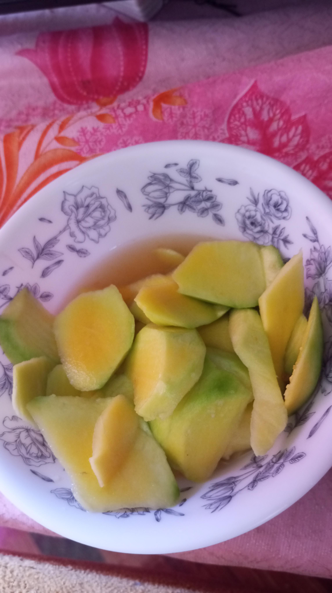

Hi,we are Kelly and Nica.We study at Immaculate Heart High School and we are both Grade 10 students.We are cousins and friends.We both enjoy playing volleyball.We spend a lot of time together at school,help each other with our studies,and support one another in different activities.We enjoy learning new things,sharing experiences,and creating happy memories.We are proud to be a part of Immaculate Heart High School.

Everybody wants a fruit especially green mango.Mango is the fruit that people in the philippines love.
Mangoes have different kinds like carabao mango,indian mango,native mango and etc.
People loves to make sauces for their green mangoes like vinegar with salt and they even add chilies to make it spicier.
The most sour kind of mangoes is the native mango one and the bigger mango is the carabao mango the smaller one is the indian mango.
But not all peoples love mango because people don't have the same taste buds but they're trying to taste it to feel the taste of the mango
/body>